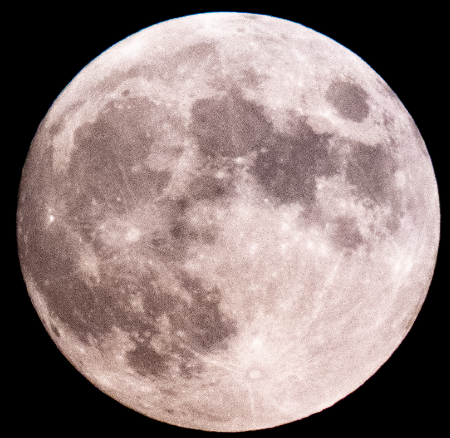
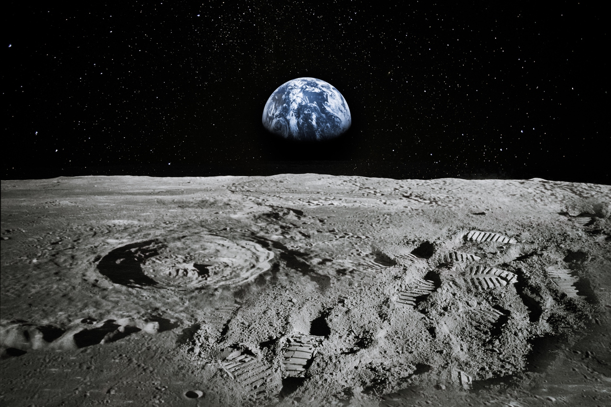
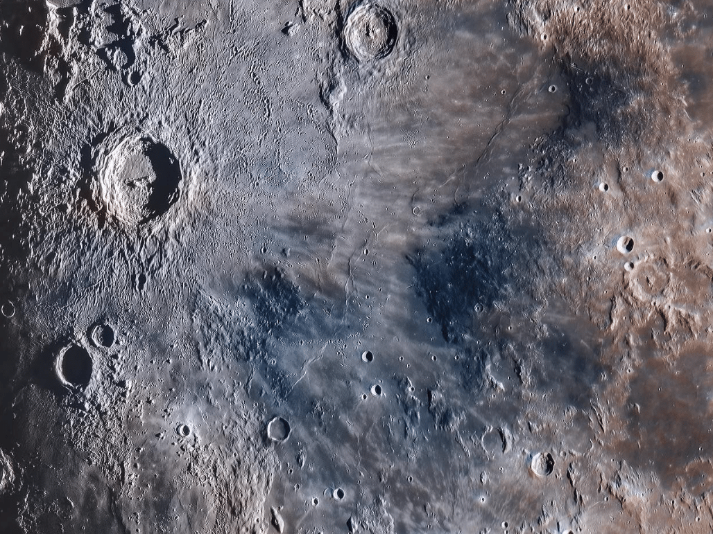
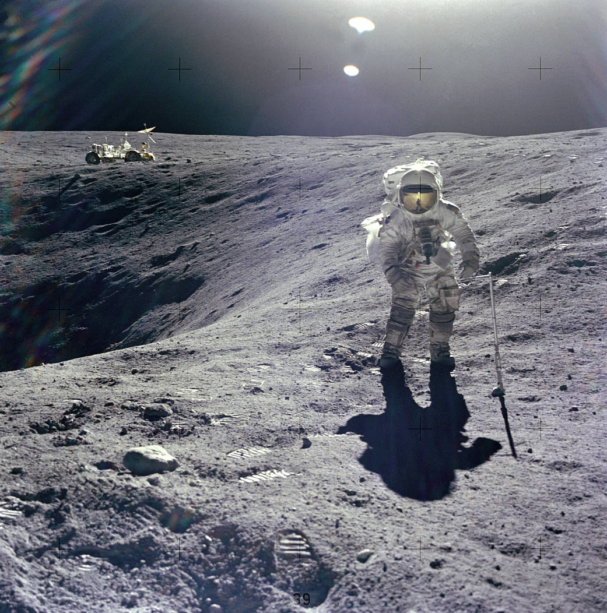

Eu sou o Rei do Mundo, que seja feita a minha vontade

A lua é um dos objetos celestes mais fascinantes do nosso sistema solar. Ela tem cativado a humanidade por séculos, desempenhando papéis importantes em mitos, religiões, literatura e, claro, na ciência. A lua é um lembrete constante do vasto cosmos ao nosso redor e da capacidade da humanidade de explorar e aprender mais sobre o universo. Sua presença noturna no céu tem inspirado gerações e continuará a fazê-lo no futuro, à medida que expandimos nossos horizontes na exploração espacial.Aqui estão alguns pontos importantes sobre a lua:
Características Lunares: A lua é o único satélite natural da Terra. Ela é aproximadamente 1/6 do tamanho da Terra e sua gravidade é cerca de 1/6 da gravidade terrestre. A lua não possui atmosfera significativa, o que significa que não há ar para respirar e o ambiente é extremamente hostil.
Fases Lunares: A lua passa por um ciclo de fases que a fazem parecer diferente a cada noite. As fases lunares incluem a lua nova, crescente, cheia e minguante. Elas são o resultado da posição relativa da lua, da Terra e do sol.
Exploração Lunar: A lua tem sido alvo de várias missões de exploração espacial. O evento mais notável foi a chegada do homem à lua em 1969, quando a missão Apollo 11 permitiu que os astronautas Neil Armstrong e Buzz Aldrin caminhassem em sua superfície. Desde então, várias outras missões tripuladas e não tripuladas visitaram a lua.
Origem Lunar: A origem da lua é objeto de estudo e debate contínuos. A teoria mais amplamente aceita é a "hipótese do grande impacto", que sugere que a lua foi formada quando um objeto do tamanho de Marte colidiu com a Terra primitiva.
Influência Lunar: A lua exerce uma influência significativa na Terra, especialmente nas marés. Ela também é muitas vezes associada a fenômenos culturais e folclóricos, como a crença de que a lua cheia afeta o comportamento humano.
Exploração Futura: A lua continua sendo um alvo importante para a exploração espacial futura. Vários países, incluindo os Estados Unidos e a China, têm planos para retornar à lua e até estabelecer bases lunares como parte dos esforços de exploração espacial de longo prazo.
Imagens da Lua


